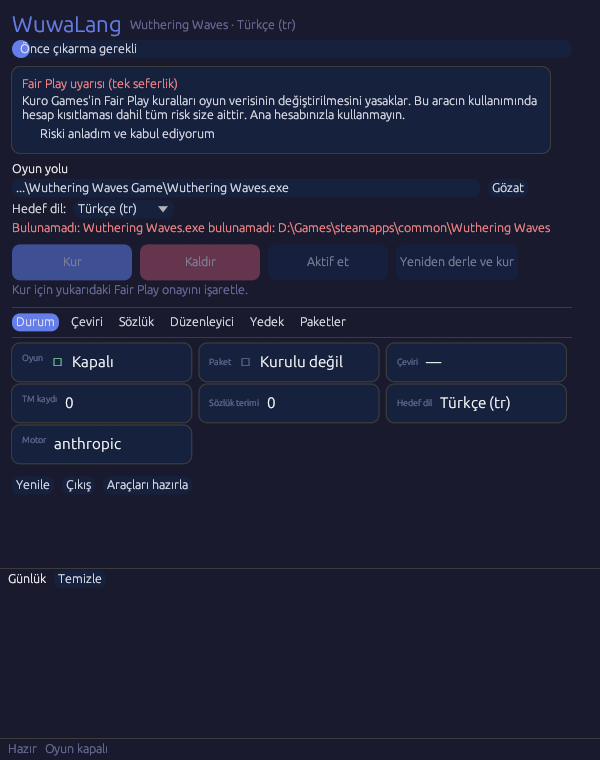
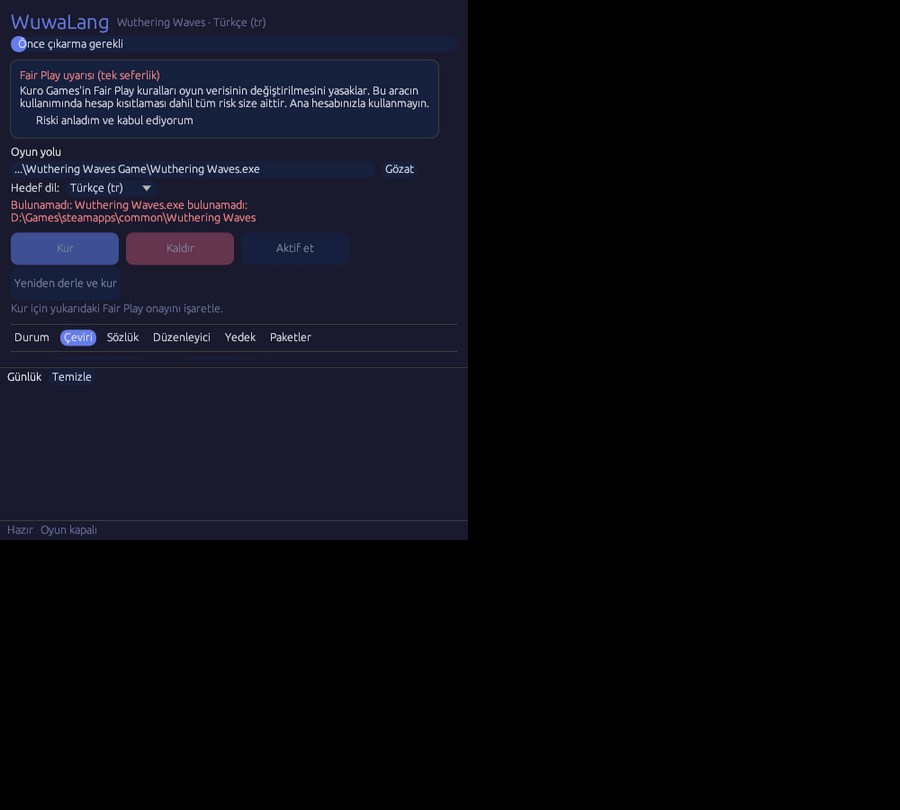
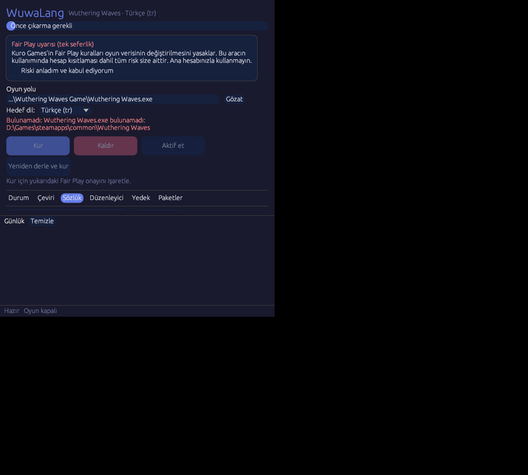
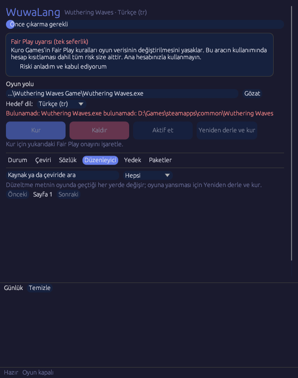

API anahtarlı çeviri
Yandex, Google, OpenAI uyumlu ve Anthropic uyumlu uç noktalar desteklenir. Anahtarlar sana aittir.
Wuthering Waves için açık kaynak çeviri modu
Wuthering Waves için tek exe'li, topluluk destekli Türkçe çeviri modu. Metinleri kendi API anahtarınla çevirir, topluluk paketlerini kullanmanı sağlar.
Kuro Games ile bağlantılı değildir. Kullanmadan önce SSS bölümündeki hesap riski uyarısını oku.

Çeviri kendi anahtarınla, kendi bilgisayarında çalışır. Yapılan her işlem görünür ve geri alınabilir.
Yandex, Google, OpenAI uyumlu ve Anthropic uyumlu uç noktalar desteklenir. Anahtarlar sana aittir.
Tek bir dosyayla kurulur ve aynı dosyayla kaldırılır. Kaldırma sonrasında oyun İngilizceye döner.
Tekrarlanan metinler bir kez çevrilir, istekler toplu gönderilir. API kullanımı ve bekleme süresi küçük kalır.
Sözlük karakter, yer ve terim adlarını her yerde aynı çevirir. Sözlük yalnızca gerçek özel isimleri ve oyun terimlerini ekler.
Makine ya da yapay zekâ çevirisini gözden geçirip elle düzeltebilirsin. Elle girdiğin çeviri otomatik çeviriyle üzerine yazılmaz.
Paketleri içe ve dışa aktarabilir, başkalarının çevirisini kullanabilir ya da kendi düzeltmelerini paylaşabilirsin.
Hedef dili listeden seçersin. Her dil için ayrı çeviri belleği, sözlük ve paket klasörü kullanılır.
Çeviri belleği değişmeden önce yedeklenir. Önceki bir sürüme dönmek tek komutla yapılır.
Oyun güncellenince tüm metinler yeniden çevrilmez. Yalnızca yeni ya da değişen metinler işlenir.
Çeviriyi tek düğmeyle açıp kapatırsın. Pasif moddayken oyun orijinal metinlerini gösterir.
Oyunun üstünde ayrı bir pencere olarak açılır. Oyuna enjeksiyon yapılmaz, oyun belleğine dokunulmaz.
Oyunun ne kadarının çevrildiğini menüde görürsün. Oyun güncellenip yeni metin gelince yüzde düşer.
Oyunun dil ayarı İngilizce kalır. Türkçe metinler oyunun kendi dil paketi mekanizmasıyla yüklenir.
Releases sayfasından wuwalang.exe dosyasını indirip çift tıkla. Kurulum penceresi açılır; oyunun Wuthering Waves.exe dosyasını seç ve Fair Play uyarısını onayla.
Çeviri sekmesinde motorunu ve API anahtarını gir, Çevir ile eksik metinleri çevir. Çeviri otomatik başlamaz.
Kur düğmesi paketi derleyip oyuna yerleştirir. Kur çeviri yapmaz; yalnızca mevcut çeviri belleğini kullanır. Oyunu açmadan önce kapalı tut.
Hangi motoru kullanacağına sen karar verirsin. Ücretlendirme ve kullanım koşulları ilgili sağlayıcıya aittir.
Yandex Çeviri API anahtarıyla makine çevirisi.
Google Cloud Translation API anahtarıyla makine çevirisi.
OpenAI biçimindeki herhangi bir uç nokta ve anahtar.
Anthropic biçimindeki herhangi bir uç nokta ve anahtar.
Durum, çeviri, sözlük ve düzenleyici sekmeleri.



Türkçe varsayılandır. Diğer dilleri aynı arayüzden seçebilirsin.
Paketler topluluğun birlikte hazırladığı çeviri dosyalarıdır. Bir paketi içe aktarıp kullanabilir, kendi düzeltmelerini dışa aktarıp paylaşabilirsin.
Çevirini paket olarak dışa aktar ve dosyayı kendin paylaş.
Değişikliğini çekme isteğiyle ya da bir sorunla ilet.
Paketi içe aktar ya da repodan çek. Güncellemeden sonra yalnızca yeni metinler çevrilir.
Hesap riski vardır ve bu riski sen üstlenirsin. Oyun verilerinin değiştirilmesi Kuro Games'in Fair Play kurallarına aykırıdır. Bu tür değişikliklerin nasıl değerlendirileceğini biz belirleyemeyiz, bu yüzden bir yaptırım olmayacağını garanti edemeyiz.
Ana hesabınla kullanmamanı öneririz. Riski kabul etmeyen kullanıcılar oyunu ve aracı kullanmamalıdır.
Hayır. WuwaLang çalışan oyun sürecine enjeksiyon yapmaz. Çeviri, oyunun kendi dil paketi mekanizmasıyla kurulur.
Önceki çeviriler yeniden kullanılır. Yalnızca yeni ya da değişen metinler çevrilir; bu hem süreyi hem API kullanımını azaltır.
Aynı exe dosyasıyla Kaldır düğmesini kullan. WuwaLang'in kurduğu dosyalar silinir ve oyun İngilizce dile döner.
Anahtarlar yalnızca seçtiğin çeviri sağlayıcısına gönderilir. Sağlayıcının panelinden anahtara harcama sınırı koymanı ve anahtarı kimseyle paylaşmamanı öneririz.
Kuro Games'in Fair Play kuralları oyun verisinin değiştirilmesini yasaklar. Bu aracın kullanımından doğabilecek riskler, hesap kısıtlaması dahil, tamamen kullanıcıya aittir. Ana hesabınla kullanma; ayrı bir hesap tercih et.